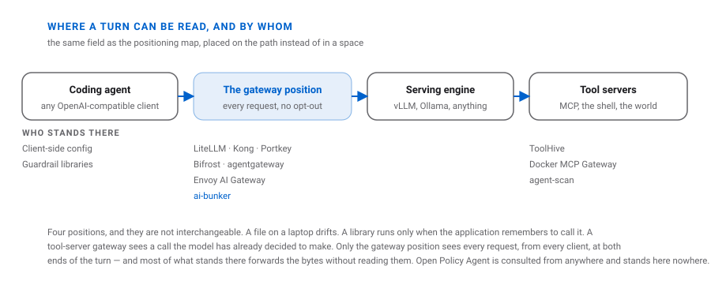

25 September 2026. Nobody was lying — the client was estimating.
WHAT IT IS
A serving layer between your coding agent and your own graphics card. It speaks
OpenAI, so every client you already use works unchanged — and nothing leaves the network.

Four positions on one path. Only one of them sees both ends of a turn.
THE PROBLEM
The client was not lying. It was estimating. Fifty-nine agent skills cost
17,754 tokens — and the floor crossed the line where compaction fires.
Compaction fires at 20,000 — and the floor is already past it.
So the session compacts on turn one with nothing to compact.
Eight tokens a turn. The accelerator busy for nothing. The harness never said a word.
THE ANSWER
Count where the tokenizer is.
agent skills (59)CLIENT 17,754
tool schemas (7)CLIENT 3,164
charterAI-BUNKER 905
knowledge indexAI-BUNKER 353
A floor nobody can decompose is a floor nobody can reduce — so every token has an owner,
including ours.